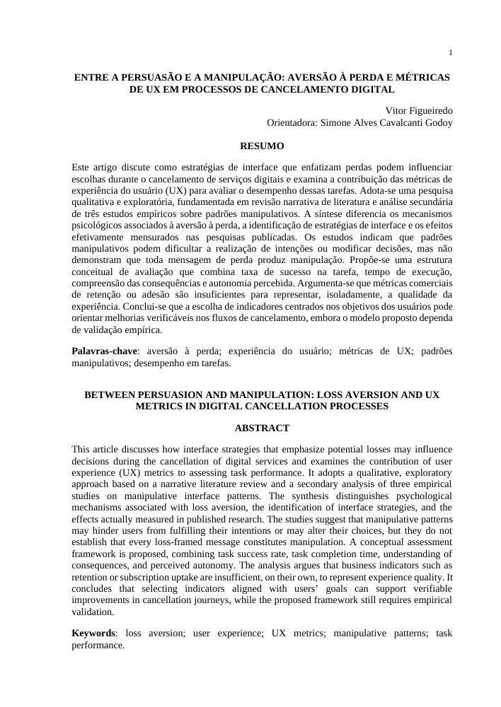

Pesquisa científica · 2026
Manuscrito acadêmico
Entre a persuasão e a manipulação
Aversão à perda e métricas de UX em processos de cancelamento digital.

Problema de pesquisa
Em que condições estratégias associadas à aversão à perda comprometem a autonomia no cancelamento digital e como avaliar o desempenho dessas tarefas?
Metodologia
Pesquisa qualitativa e exploratória, revisão narrativa da literatura e análise secundária de três estudos empíricos sobre padrões manipulativos.
Contribuição
Estrutura conceitual que combina sucesso na tarefa, tempo de execução, compreensão das consequências e autonomia percebida.
Limites
O artigo distingue efeitos mensurados de mecanismos psicológicos hipotéticos. O modelo requer validação empírica; não há confirmação de publicação ou revisão por pares.
Material de referência
Versão do manuscrito fornecida para o portfólio. Publicação não confirmada.